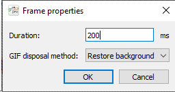
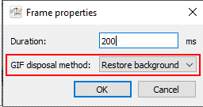

Animated GIFs
Limitations
- Each frame of an animated GIF can only have at most 256 different colors, including the transparent color.
- These colors cannot be partially transparent. Their alpha must be either 0 or 255.
- The duration of each frame must be a multiple of 10 milliseconds.
Setting the duration of a frame
Use the menu item Frames | Frame properties or double-click the frame thumbnail in the frame list below the editor.
The duration should be a multiple of 10 milliseconds.

Disposal method
In an animated GIF we can specify a disposal method for each frame, which determines what will happen when the frame's time slice is over. The available disposal methods are:
- Restore background (default): the next frame will be rendered over a transparent background.
- Restore previous: the current frame will be "undone" and the next frame will be drawn over whatever image was visible before the current frame was shown.
- Leave in place: current frame is not disposed of, i.e. the next one will be drawn on top of it.
- Unspecified: same meaning as "Leave in place", but not recommended as not all renderers may support it.
You can set the disposal method in the Frames | Frame properties dialog.

With Frames | Convert GIF frames to keyframes you can convert a GIF to an equivalent animation where each frame has the Restore background disposal method. This is useful if you want to extract the "effective" frames from a GIF.
Playing the animation
Use the test window: choose Icon | Test (Ctrl+Shift+T) or press on the toolbar above the image editor panel, just like when testing an icon.
← Index